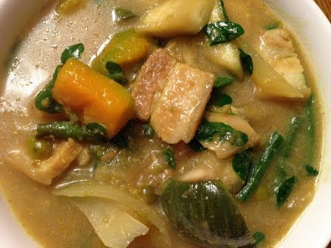

Odin Recipe

Somlor Kokor
Desciption
While amok is sometimes called the country’s national dish, and might be
the one most familiar to tourists, samlor korkor has a better claim to
being the true national dish of Cambodia. It has been eaten for hundreds
of years and today can be found in restaurants, roadside stands and family
homes alike. The ingredients list for this nourishing soup is versatile
and easily adapted to whatever is seasonal and abundant; it often includes
more than a dozen vegetables. It can be made with almost any type of meat,
but most commonly it’s a hearty soup made from catfish and pork belly. The
soup always includes two quintessential Cambodian ingredients – prahok, a
type of fermented fish, and kroeung, a fragrant curry paste – and is then
thickened with toasted ground rice.
Ingredients
- 3 stalks Lemongrass
- 2 inches Galangal knob
- 4 cloves Garlic
- 5 leaves Lime tree leaf
- 1 Chilli pepper
- ½ teaspoon Salt
- 1 tablespoon Prahok paste
- 1 lb Pork bone
- ¼ cup Ground roasted rice
- 1 Papaya Unripe (green), small
- 1 cup Bitter eggplant
- 1 Eggplant
- ⅓ Butternut squash
- 1 lb Long beans
- 1 cup Moringa leaves
- ½ tablespoon Sugar Palm sugar is an alternative
- ½ teaspoon MSG
- 1 tablespoon Fish sauce
- 1 tablespoon Cooking oil
- 5 cups Water
Steps
- Cut lemongrass into thin slices and place in a mortar
- Clean the garlic cloves and put inside the mortar
- Wash the chilli pepper and place inside the mortar
-
Peel the galangal skin off, cut the galangal into thin slices and place
into the mortar
- Shred the lime tree leaves thinly and place inside the mortar
- Peel the turmeric skin, slice thinly and place into the mortar
- Add salt to the mortar
-
Using the pestle, crush the ingredients inside the mortar until they
achieve a uniform paste-like consistency